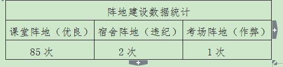

学风是我院师生精神面貌的集中体现，是实现我校国际化办学的基础。2014年是我校学风建设关键年，为此，我院根据学校学风建设的要求与安排，高度重视，以制度建设为抓手，以学风管理为重点，坚持全员参与、全方位管理、全过程指导，认真落实好学风建设的各项工作，努力营造我院优良的学风。
一、成立学风建设领导小组，全面统筹学风工作。
根据学校学风建设的布暑，我院迅速成了以吴立广院长为组长、汪昊院长助理为副组长及全体辅导员、班主任为成员的学风建设工作小组，为我院学风建设提供了有力的组织保障。
二、组建学风管理队伍，切实落实学风建设。
辅导员、班主任是学生管理工作队伍的重要组成部分，为此，我院迅速组建了辅导员、班主任的管理队伍，主要负责组织安排、听课、走访宿舍、谈话谈心等学风工作的实施。

三、建立健全学风建设的制度，有效地推进学风建设。
为此，我院认真建立健全了学风建设的各项制度。具体如下：《华南理工大学广州学院国际商学院学风建设实施方案》、《华南理工大学广州学院国际商学院考勤制度》、《华南理工大学广州学院机国际商学院考勤和课堂纪律管理规定》、《华南理工大学广州学院国际商学院考勤与课堂纪律登记表（班主任辅导员专用）》、附件三：华南理工大学广州学院国际商学院考勤与课堂纪律登记表（教师及行政人员专用）、附件四：国际商学院学生考勤与课堂纪律登记周汇总表、附件一：华南理工大学广州学院国际商学院考勤与课堂纪律登记表（学生专用）。
四、加强学生组织建设，发挥学生干部的引领作用。
一是各班根据学校和学院的统一安排，结合班级实际，制定了班级学风建设的制度：如考勤制度、作弊处罚条例等；二是班长、团支书组成学风抽查小组，以年级交叉检查方式，认真执行学风检查、登记，并对违规学生进行教育，切实承担起学风建设的工作。
五、抓好阵地，发挥堡垒作用。
我院积极抓好课堂、宿舍、考场等三个主阵地，各司其职，切实发挥阵地的堡垒作用于，扎实推进学风建设。

六、认真安排，扎实推进学风建设。
为了配合学校关于学风建设的指示，结合我院的实际情况，打造我院优良学风，提高教育教学水平，促进学生向着应用型、复合型、创新型、国际化的方向不断发展，特制定了我院学风建设的实施方案。具体如下：
第一阶段：学风建设启动阶段：5月5日—14日
1、我院学生工作办工室根据实际情况制定考勤制度：《华南理工大学广州学院国际商学院考勤和课堂纪律管理规定》。
2、召开学生代表座谈会，由各年级各班召开学风建设讨论会，主要针对学风建设的内容，包括考勤制度、课堂纪律情况、教学形式等内容进行讨论，学习我校关于学风建设的相关文件并对《华南理工大学广州学院国际商学院考勤和课堂纪律管理规定》提出修改意见。
3、召开班主任、辅导员、理论课教师代表座谈会，学习《华南理工大学广州学院关于“2014年教风建设”的工作方案》和《华南理工大学广州学院教学事故认定与处理实施办法（2013年修订）》并对《华南理工大学广州学院国际商学院考勤和课堂纪律管理规定》提出修改意见。
4、召开座谈会后，根据学生代表、教师、班主任、辅导员等提出修改的意见进一步讨论，最终形成《华南理工大学广州学院国际商学院考勤和课堂纪律管理规定》。
第二阶段：学风建设宣传阶段：5月15日—20日
1、学院团委学生会利用横幅、海报、微博、微信等工具，大力宣传我院学风建设工作，力求让我院每一位师生都清楚学风建设的意义，营造一个良好的环境。
2、各班召开学风建设的主题班会，强调学风建设的重要性、严肃性、长期性，传达我院的《华南理工大学广州学院国际商学院考勤和课堂纪律管理规定》及实施方案，让每一个学生都主动投入到学风建设中来，同时，各班应做好主题班会的总结工作，并形成报告上交到年级辅导员处。
3、5月20日（周二）下午，召开国际商学院学风建设动员大会，营造我院优良学风建设的氛围和环境。
第三阶段：学风建设试行阶段：5月20日—25日
按照《华南理工大学广州学院国际商学院考勤和课堂纪律管理规定》及实施方案，班级纪律委员、班主任、辅导员、行政人员、理论课教师、学院领导等做好学生课堂纪律、学习状况等情况的记录工作（详见：华南理工大学广州学院国际商学院学风检查安排表），并进行汇总，召开试行阶段的总结，发现问题、解决问题，为下一阶段的学风建设工作做好充分的准备工作。
第四阶段：学风建设执行阶段：5月28日—6月22日
经过讨论、宣传、试行等工作后，进入到了正式执行阶段，该阶段将严格按照学院关于学风建设的具体制度与实施方案，执行学风建设的所有内容，并将具体情况进行详细的登记，作为以后总结表彰、通报批评的依据。
第五阶段：学风建设整改阶段：6月16日—6月29日
该阶段的工作，在正式执行阶段总结后，由理论课教师、辅导员、班主任对严重违纪的学生进行约谈，并限期让学生进行整改，以稳步推进学院的学风建设。
第六阶段：学风建设总结阶段：
1、各班进行总结，包括文字材料、相片、活动、活动前后的效果、存在的问题、改进的措施等；
2、学院团委学生进行总结，包括宣传效果、执行的困难、存在的问题、改进的措施等；
3、班主任、辅导员、理论课教师、行政人员进行总结，包括存在的问题、改进的措施等；
4、学院总结大会，树立典型、表彰先进，并颁发证书，同时，也对排名靠后的班级及个人进行通报批评。
七、总结表彰。
2014年10月15日，国际商学院在A6-304隆重召开了学风建设的总结暨表彰大会。
经过我院全体师生的努力，我院学生违纪违规现象逐渐减少，课堂纪律逐渐加强，整体学风逐渐好转，有力地推进我院的学风建设！
（1）预期目标基本实现。在全院师生的共同努力下，学风建设制度完善、课堂违纪减少，学生纪律提高、学习风气逐渐增浓、学生集体荣誉感明显增强等目标基本实现。
（2）表彰先进，树立典型。根据统计汇总情况：对积极参与并取得优异成绩的班级：2013级国际会计1班授予“学风建设先进班集体”荣誉称号，同时，在学风建设中表现差的姚力中、谢本溪等两名学生给予全院通报的处罚。通过表彰先进，树立典型，进一步促进我院优良学风的建设。
（3）学风建设中存在的一些问题，如：部分班级学风建设宣传动员力度不够、部分班委工作不积极、部分班级没有制定针对性的措施、部分学生不理解学风建设的意义，甚至排斥学风建设等。
国际商学院